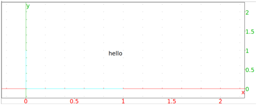
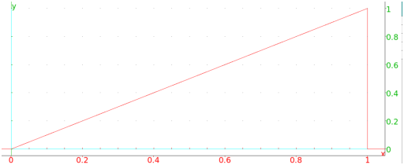
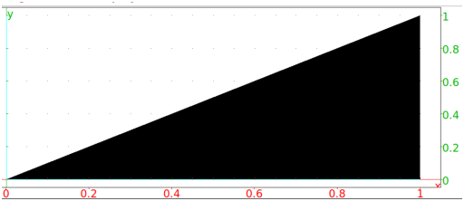
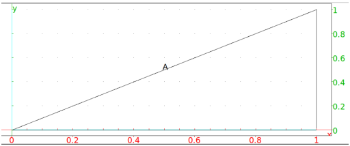
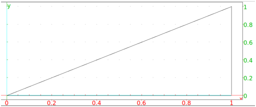

13.3.3 Commands for global display features
Adding a legend: legend
The legend command creates a legend on the screen.
-
legend takes two mandatory arguments and one optional
argument:
-
pos, either be a point or a
list of two integers giving the number of pixels from the upper left
hand corner, specifying the position to put the legend.
- legend, a string or a variable.
- Optionally, quad, which can be one of
quadrant1, quadrant2, quadrant3 or
quadrant4. This indicates where to put the legend
relative to the point (by default, it is quadrant1).
- legend(pos,legend ⟨quad⟩)
draws the legend at the requested position.
Example
To put "hello" to the upper left of the point
(1,1):
Input:
legend(1+i,"hello",quadrant3)
or:
legend(1+i,quadrant3,"hello")
Output:

Changing various features:display color
The display command changes the properties of graphics; the
same properties that can also be changed with the display and
color parameters (see Section 13.3.2). The
color command a synonym for the display command.
The display command draws objects with specified
properties.
-
display takes one mandatory arguments and one
optional argument:
-
Optionally, command, a command to draw an object.
- arg, which can be a possible value of the
display parameter (see Section 13.3.2) or
hidden_name.
- display(command,arg) draws the
object given by command with the property given by
arg, or draws the object without a label if
arg=hidden_name.
- display(arg) applies the property
given by arg to all subsequent objects; display(0)
resets the display parameters.
Examples
-
Input:
display(triangle(0,1,1+i),red)
or:
triangle(0,1,1+i,display=red)
Output:

- Input:
triangle(0,1,1+i,display=filled)
or:
display(triangle(0,1,1+i),filled)
Output:

- By default, if a geometric object is named,
the drawing is labeled.
Input:
A:= triangle(0,1,1+i)
Output:

Creating the object with the display command and the
hidden_name argument will draw it without the label.
Input:
display(A:= triangle(0,1,1+i),hidden_name)
Output:
